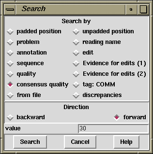

The contig editor's searching ability and its links to the consensus calculation algorithm are crucial in determining the efficiency with which contigs can be checked and corrected. The consensus is calculated "on the fly" and changes in response to edits. For editing, the most important search functions are those which reveal problems in the consensus whilst ignoring all bases that are adequately well determined. The default search type is therefore by consensus quality. By default this is done in the forward direction and for a quality value of 30, although this is configurable by changing the collowing lines in the gaprc file.
set_def CONTIG_EDITOR.SEARCH.DEFAULT_TYPE consquality set_def CONTIG_EDITOR.SEARCH.DEFAULT_DIRECTION forward set_def CONTIG_EDITOR.SEARCH.CONSQUALITY_DEF 30
Selecting "Next Search" brings up a window which can remain present during normal editor operation. The window allows the user to select the direction of search, the type of search, and a value to search on. The value is entered into a value text box, then pressing the "search" button performs the search. If successful, the cursor is positioned accordingly. An audible tone indicates failure. Pressing the "Cancel" button removes the search window. The search window is automatically removed when the contig editor is exited.

The "Cutoffs" button can be used to select whether or not searching should find matches within the cutoff data.
The Control-s key binding in the editor is equivalent to searching forward for the next match. The Escape Control-s key sequence performs a reverse search. Both key bindings will bring up the search window if it is not currently displayed.
As is described below, there are thirteen different search modes.
The presence of padding characters in the consensus can greatly alter the length of the sequence, and the positions of the bases along it. Positions can therefore be defined in two ways: those which include pads and those which do not. This option (termed a search!) moves the cursor to a specified position. The numeric position is specified in the value text box. Eg a value of "1234" causes the cursor to be placed at base number 1234 in the contig. Positioning within a reading is achieved by prefixing the number with the "@" character, eg "@123" positions the cursor at base 123 of the sequence in which the cursor lies. Relative positions can be specified by prefixing the number with a plus or minus character. Eg "+1234" will advance the cursor 1234 bases. If possible, the cursor is positioned within the same sequence. The direction buttons have no effect on this operation.
This positions the cursor at the next place in the consensus sequence which is "*", "-" or "N". The search can be performed either forwards or backwards from the current cursor position. Obviously the characters appearing in the consensus depend on the selected consensus calculation algorithm and the thresholds set.
This positions the cursor at the start of the next tag which has a comment containing the string specified in the value box. Only currently active tag types are searched. The search performed is a regular expression search, and certain characters have special meaning. Be careful when your string contains ".", "*", "[", "]", "\", "^" or "$". The search can be performed either forwards or backwards from the current cursor position. Searching with an empty value will find all tags.
This positions the cursor at the start of the next tag of the specified type. If the tag type is not active, the tag will be found and underlined but will remain invisible. To change the type, select from the menu that pops up when the mouse is clicked on the button labeled "Type:". The search can be performed either forwards or backwards of the current cursor position. To find all tags, use "Search by Annotation Comments", with an empty text box.
This positions the cursor at the start of the next segment of sequence that matches the value specified in the text box. The search is case insensitive, ignores pads, and can allow a specified number of mismatches. It may be performed on sequence only, consensus only or both. It also operates either forwards or backwards from the current editing cursor position.
This positions the cursor at the next place in the consensus sequence where the consensus for each of the two strands disagree. Where there is only data for one strand the search will stop at every base. The search can be performed either forwards or backwards from the current cursor position.
This positions the cursor on the consensus at the next position where the quality of the consensus is below a given threshold. The quality of the consensus is calculated by the consensus algorithm. For this search the quality threshold should be entered into the value box and should be within the range of 0 to 100 inclusive.
This steps the cursor through a set of positions specified in a file. The format for the positions in the file is one per line with each line consisting of a reading name, a position within that reading, and an optional comment. If a position is relative to the start of the contig rather than the start of any particular reading, then simply use the first reading in the contig. Positions that are beyond the ends for the reading are still valid, although the editing cursor is moved onto the consensus sequence.
The comment can consist of any string. Multiline comments are possible, but
they must be written using \n in the comment string rather than an
actual newline character (which would signify the start of the next
record).
The
comment for the current position is displayed at the bottom of the editor search
window in a text panel which is visible only when in the "search by file"
mode.
Any record containing a reading name that is not in the current contig is silently ignored. This allows for a search file to have positions for all contigs. However at present there is no mechanism for stepping through an entire search file bringing up editors for each contig as required. This will be implemented in the future.
An example file follows.
xb63c7.s2 102 xb63c7.s2 30 A multi-\nline comment. xb32a2.s1 56 Oligo, of length 12 xa17b1.r1 5714 Repeat from 5714 to 5780
This positions the cursor at the left end of the reading specified in the value text box. If the value is prefixed with a hash sign it is assumed to be a reading number. Otherwise it is assumed to be a reading name. Eg "#123" positions the cursor at the left end of reading number 123. "a16a12.s1" positions at the start of reading a16a12.s1. If the value was "a16" the cursor is positioned at the first reading which starts with "a16".
This positions the cursor at the next place in the contig where an edit has been made. Edits include base insertions, deletions, replacements and confidence value changes.The search can be performed either forwards or backwards from the current cursor position.
The Evidence for Edit (1) option checks edited bases to find bases in the consensus for which there is no evidence in the original readings. The definition of evidence is that at least one reading had this original base call. Currently this search operates only in the forward direction.
p@cindex Searching by Verify OR: contig editor
The Evidence for Edit (2) option checks edited bases to find bases in the consensus for which there is no evidence in the original readings. The definition of evidence is that at least one reading from each strand had this original base call. Currently this searches only in the forward direction.
This finds positions where two or more bases are above a particular quality level, but in disagreement. The quality threshold is given in the value box and should be within the range of 0 to 100 inclusive.
This finds positions where there is a significant disagreement in a particular consensus base. Unlike "by Discrepancies" this does not look for individual base confidence values, but rather it combines multiple bases together for each base type and searches for the second highest confidence at any point. This is the same method use in the 2nd-highest confidence graph (see section 2nd-Highest Confidence).